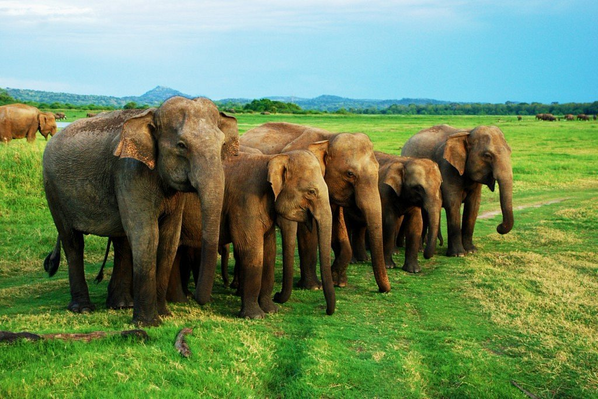

The Department of Wildlife Conservation has been entrusted
with the responsibility of preserving eco system endowed with various plants and
animal species which has inherited the country with enormous bio-diversity.
The main function of the Department of Wildlife Conservation established in 1949
is the conservation of wildlife resources in Sri Lanka. Accordingly, the sources of water
feeding all the main revivers in Sri Lanka and catchment areas of 40 major reservoirs
providing water for agriculture and hydro-power generation are protected within this wildlife
reservation network which exceed 13% of the total land area of the island. The responsibility
of managing this wildlife reservation network is solely falling upon the Department of Wildlife
Conservation. This network consists of reservations declared under various reservation levels.

Sigiriya

Horton Plains

Minneriya National Park